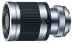

采用6片2组的镜头结构，是一个款焦距为400mm，恒定光圈值为F8的手动折返式定焦镜头。
67的滤镜，小巧、轻便。镜身金属镀造工艺与nex机身很搭配，手动调焦柔顺，调焦旋转角度便于峰值对焦的配合。弱光成像一般。色还原比较饱满。光线条件好的情况下，解像比较细腻，符合图丽的风格。价格若在国内销售在2000元附近，是nex镜头群很好补充。
外观靓丽，轻便小巧，色还原不错。微距功能是个亮点，操作方便。
弱光下成像一般。手持拍摄难度大。